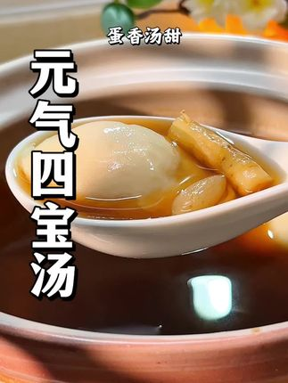
原视频 #001汤羹茶饮 · VIDEO 001
元气四宝汤
来源：置顶 2.8万 天越来越热，出汗多易伤人体津液，试试这老一辈的元气四宝汤的搭配，元气满满哦#三伏天#滋补养生#食养#中式养生#元气四宝茶
打开原视频核对 ↗食材：黄芪6克、党参10克、麦冬10克、西洋参5克、鸡蛋2个。
做法：前四味加水煮25分钟，打入鸡蛋，扣盖焖5分钟；可按口味少量加盐或糖。
从账号主页 200 个公开作品中整理。将重复主题合并为 79 组可操作配方，保留原视频封面与出处；每一组都可直接搜索食材或菜名。

原视频 #001来源：置顶 2.8万 天越来越热，出汗多易伤人体津液，试试这老一辈的元气四宝汤的搭配，元气满满哦#三伏天#滋补养生#食养#中式养生#元气四宝茶
打开原视频核对 ↗食材：黄芪6克、党参10克、麦冬10克、西洋参5克、鸡蛋2个。
做法：前四味加水煮25分钟，打入鸡蛋，扣盖焖5分钟；可按口味少量加盐或糖。
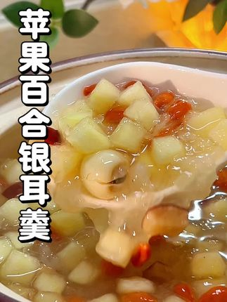
原视频 #002来源：置顶 1.5万 不管大人还是小孩每个季节都要好好润养，这碗家常甜羹，温润滋养很好喝！#喝出好气色食养#苹果百合银耳羹#美谷季有机银耳#食养#春季热饮
打开原视频核对 ↗食材：苹果1个、莲子20克、百合15克、冰糖适量、清水1000毫升、银耳8克、红枣3颗、枸杞适量。
做法：苹果、莲子、百合、冰糖加水，水开煮15分钟；加银耳和红枣碎，再煮15分钟，最后放枸杞。
汤：走地鸡、姜片、虫草花、甜玉米、菌菇、去核红枣，汽锅模式炖煮，出锅加盐和枸杞。
菜：芋头蒸排骨（排骨用盐、姜丝、生抽、生粉、蚝油、食用油腌制）；虾仁豆腐；姜片清蒸鱼；另配时蔬。鸡汤炖好后，排骨、虾仁豆腐和鱼上下两层同蒸。鱼出锅放葱丝、彩椒和酱油。
注：视频未给出统一的蒸制分钟数，请按食材大小和设备说明确保熟透。
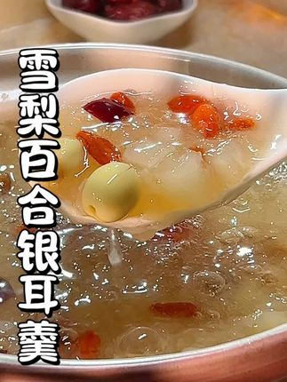
原视频 #004来源：338 不管大人还是小孩每个季节都要好好润养，这碗家常小甜羹，温润滋养很好喝#雪梨百合银耳羹#银耳羹#秋季热饮#有机本草银耳#食疗小妙招
打开原视频核对 ↗食材：雪梨1个、莲子20克、百合15克、黄冰糖适量、清水1000毫升、银耳8克、红枣3颗、枸杞适量。
做法：雪梨、莲子、百合、冰糖加水煮15分钟；加银耳和红枣碎，再煮15分钟，最后放枸杞。
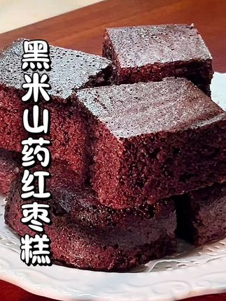
原视频 #005来源：1549 黑米搭配山药做出来的糕点原来这么好吃，比蛋糕还松软香甜，营养又暖胃，做法也简单，很适合老人孩子。#黑米山药红枣#黑米蒸糕#营养早餐#北鼎电蒸锅G525#北鼎
打开原视频核对 ↗食材：黑米100克、铁棍山药150克、红枣碎8颗、鸡蛋2个、白糖1勺、酵母2克。
做法：黑米洗净浸泡一夜并沥干；全部食材入料理机，不加水，打打停停约3分钟。蒸盘喷油、垫油纸，倒入米糊并震出气泡；水开蒸25分钟，再焖5分钟。
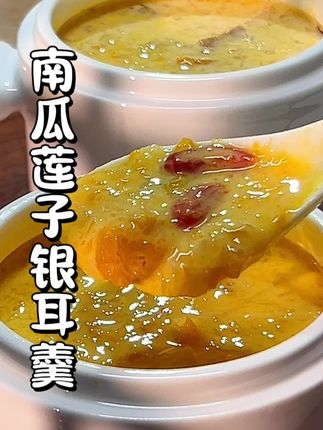
原视频 #006来源：194 很多人不知道，秋冬天就要使劲养津才水润不拔干，这碗南瓜银耳羹温润清甜，胶质满满，暖心又暖胃又好吃#银耳羹 #南瓜银耳羹#北鼎电蒸锅G525#北鼎
打开原视频核对 ↗食材：南瓜、银耳、莲子、红枣2颗、枸杞10粒、老冰糖1块、开水八分满。
做法：食材入炖盅，加开水并加盖；水开后继续蒸30分钟。
注：南瓜、银耳和莲子的具体克数原视频未说明。
食材：带壳桂圆3颗、去核红枣3颗、生姜半勺、老红糖适量、免泡银耳5克、清水400毫升、常温鸡蛋2个、枸杞适量。
做法：桂圆、红枣、姜、红糖、银耳加水煮15分钟；带盖炖盅用开水烫热，打入鸡蛋并加枸杞，冲入滚烫银耳羹，盖盖焖2—3分钟。
食材：苹果、银耳、燕麦、红枣、鸡蛋、牛奶、枸杞。
做法：苹果和银耳加盖煮10分钟；加燕麦、红枣再煮3分钟；关火后淋入蛋液和牛奶，最后放枸杞。
注：各食材用量原视频未说明；蛋液需利用余温充分凝固。
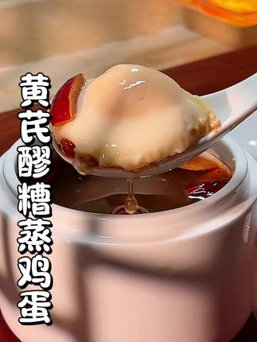
原视频 #010来源：144 老话说黄芪蒸鸡蛋给金都不换，早上来一碗美味又营养，建议我们女生多喝~#喝出好气色#吃出健康#黄芪蒸鸡蛋#黄芪醪糟炖蛋#醪糟
打开原视频核对 ↗食材：黄芪3片、红枣3颗、麦冬5粒、枸杞10粒、小黄姜2片、红糖1勺、醪糟1勺、鸡蛋1个。
做法：除醪糟、鸡蛋外，食材加八分满清水，加盖水开蒸15分钟；加醪糟并打入鸡蛋，继续蒸5分钟。
食材：苹果1个、红枣3颗、红糖1勺、清水500毫升、枸杞适量、牛奶100毫升、桂花少许。
做法：苹果、红枣、红糖加水，水开煮5分钟；关火加枸杞、牛奶，撒桂花。
食材：山药、银耳、燕麦、红枣、鸡蛋、椰奶或牛奶、枸杞。
做法：山药、银耳煮8分钟；加燕麦、红枣煮3分钟；关火倒入蛋液和奶，最后放枸杞。用量原视频未说明。
食材：玉竹10克、党参10克、麦冬10克、清水1000毫升。
做法：食材洗净入壶，果茶模式煮25分钟。
食材：石榴籽、红枣3颗、纯藕粉2勺、酒酿2勺、枸杞和干桂花少许。
做法：水开下石榴籽，小火煮5分钟并捞出；加红枣碎煮10分钟；藕粉用凉水化开，倒入锅中快速搅至浓稠透明；加酒酿，撒枸杞和桂花。转写中的“雪梨”语义不明，未纳入。
食材：苹果1个、铁棍山药10克、莲子10克、茯苓10克、芡实10克、清水1000毫升。
做法：苹果去核切块，与其余食材加水，大火煮开转小火煮30分钟。
食材：怀山药15克、黑豆15克、陈皮3克、苹果1个、清水1000毫升。
做法：食材洗净入壶，果茶模式煮25分钟。
食材：山药、莲子、百合、茯苓、南杏仁、糯薏米各10克，干银耳5克，清水600毫升。
做法：全部食材入破壁机，加水，使用豆浆模式。
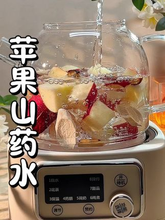
原视频 #024来源：334 很多人不知道，苹果和山药的搭配有多好，清甜温润，还带着淡淡的苹果香，老人小孩都爱喝！#食养#苹果山药水#健脾养胃 #养生茶#苹果水
打开原视频核对 ↗食材：苹果1个、铁棍山药片20克、去核红枣3颗、清水1000毫升、枸杞5粒。
做法：前四样用果茶模式煮30分钟，煮好后放枸杞。
食材：南瓜100克、铁棍山药3节、小米15克、红枣3克、银耳3克、清水700毫升。
做法：全部入破壁机，使用豆浆模式；可按口味加牛奶。
配方一：麦冬8克、莲子10克、百合10克、山楂5克、红枣3颗。
配方二：麦冬8克、黄芪8克、红枣3克、枸杞10克、雪梨1个。
做法：分别加清水1000毫升，大火煮开后继续煮20分钟。
食材：雪梨半个、铁棍山药3段、大米20克、银耳5克、黄冰糖10克、清水600毫升。
做法：全部入破壁机，使用豆浆模式。
来源：195 用一根香蕉给孩子做营养早餐，香甜软糯，真的很好吃，早餐不知道吃什么，可以试试这个，孩子一口就爱上。#早餐#小学生早餐#营养早餐#香蕉鸡蛋卷#儿童营养早餐
打开原视频核对 ↗食材：香蕉1根、鸡蛋3个、番茄酱少许。
做法：蛋清、蛋黄分开并分别搅匀；玉子烧锅喷油，铺香蕉片，淋蛋清，小火定型后卷起，再煎1分钟；推到一侧，倒入蛋黄，定型后再次卷起，挤番茄酱。
①玉竹12克、莲子12克、干百合10克；②玉竹12克、干百合10克、麦冬10克；③玉竹12克、山药干15克、干玫瑰6朵；④玉竹12克、黄芪8克、去核红枣3颗。
做法：每款分别加清水1000毫升，花茶模式煮25分钟。
食材：黑豆20克、黑米10克、黑桑葚8克、枸杞3克、炙甘草2克、黄精（原语音疑似“黄金”，按食材语义校正）。
做法：加水1000毫升，大火煮开转小火煮25分钟。
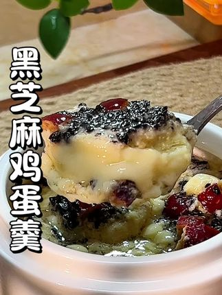
原视频 #037来源：382 原来懂行的人是这么吃早餐的，这也是女生保养自己的好方法，Q弹嫩滑，营养满满。#早餐#黑芝麻蒸蛋#牛奶炖蛋#鸡蛋羹#食养
打开原视频核对 ↗食材：香油1勺、鸡蛋2个、熟黑芝麻1勺、红枣碎3颗、牛奶200毫升、香蕉半根。
做法：除香蕉外搅拌均匀，再加入香蕉并加盖；水开蒸20分钟。
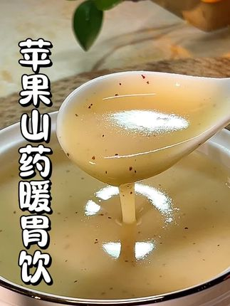
原视频 #039来源：3.4万 秋天是养脾胃的好时间，多给家人煮这个苹果山药米糊，暖乎乎的很养人，喝完很舒服#早餐#苹果山药米糊#破壁机食谱 #铁棍山药#健脾养胃
打开原视频核对 ↗食材：苹果半个、山药60克、小米30克、去核红枣5颗、清水600毫升。
做法：食材洗净入破壁机，使用米糊模式。
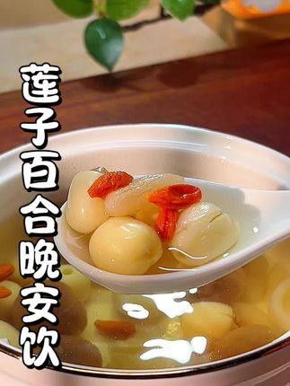
原视频 #045来源：557 入秋后燥气渐起，心🔥上扬，白昼易烦易燥，睡不安稳，这碗小甜水日常多喝一喝，清清润润的很舒服#养生茶#莲子百合水#秋季养生茶#食养
打开原视频核对 ↗食材：莲子10克、百合10克、桂圆5颗、麦冬5克、清水1000毫升、枸杞适量。
做法：前五味水开煮30分钟，最后放枸杞。
食材：黄芪10克、百合10克、麦冬5克、黑豆20克、清水1000毫升。
做法：全部入壶煮30分钟。
食材：桃子、黄冰糖少许、纯藕粉2勺、枸杞少许、酒酿2勺、干桂花少许。
做法：桃子加水和冰糖，小火煮10分钟；藕粉用凉水化开后淋入，快速搅匀；加枸杞、酒酿，撒桂花。
食材：莲藕半根、雪梨半个、山药片15克、百合10克、冰糖1小块、清水700毫升。
做法：全部入破壁机，使用豆浆模式。
①苹果1个、黄芪8克、山药片15克、麦冬8克；②莲子10克、百合10克、麦冬10克、陈皮5克、西洋参5克。
做法：分别洗净加水，煮25分钟。总水量原视频未说明。
食材：雪梨、莲子15克、百合10克、红枣3颗、冰糖适量、清水1000毫升、纯藕粉2勺、枸杞适量。
做法：雪梨等前五味加水，大火烧开转小火煮20分钟；藕粉用凉水化开，倒入锅中搅至浓稠透亮，最后放枸杞。
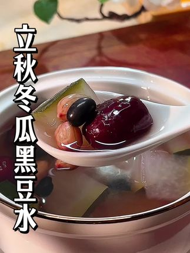
原视频 #057来源：1089 三伏遇立秋 湿热两头揪，大家记得煮冬瓜黑豆水给家人喝，清清爽爽，滋滋润润很好喝#立秋冬瓜茶#冬瓜黑豆水#立秋#喝出好气色#立秋喝什么
打开原视频核对 ↗食材：带皮冬瓜200克、黑豆20克、红皮花生20克、去核红枣3颗、清水1000毫升。
做法：全部入壶，花茶模式煮30分钟。
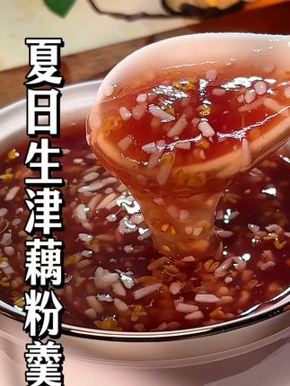
原视频 #058来源：971 夏天出汗多，易伤津液，人容易累提不起精神，这碗老一辈传下来黄芪玫瑰藕粉羹煮起来#黄芪玫瑰藕粉羹#藕粉羹#纯藕粉#喝出好气色#养生
打开原视频核对 ↗食材：黑豆、玫瑰、黄芪、山楂、茯苓、陈皮、清水1000毫升、纯藕粉2勺、干桂花、醪糟1勺。
做法：前六味加水煮开，转小火煮20分钟；捞出食材，倒入凉水化开的藕粉，搅至浓稠透亮；撒桂花，加醪糟。前六味用量原视频未说明。
食材：玫瑰7朵、黄芪5克、桑葚10克、去核红枣3颗、枸杞6克、清水1000毫升。
做法：除枸杞外加水煮25分钟，最后加入枸杞。
食材：黑豆、山药、莲子、百合、山楂、陈皮、清水。
做法：食材加水，小火煮约20—30分钟。原视频未给各食材克数和准确时间，可按同系列配方煮25分钟。
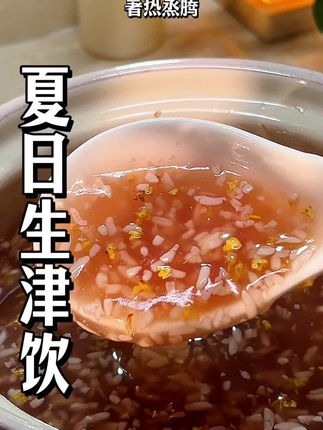
原视频 #066来源：268 很多人不知道，其实藕粉很养人，咱们女生平时可以多花一点时间给自己煮一碗藕粉羹，爱自己真的很简单#黑豆藕粉羹#藕粉羹#纯藕粉#补津液#喝出好气色
打开原视频核对 ↗食材：黑豆、莲子、桂圆、红枣、清水、纯藕粉2勺、桂花、醪糟2勺。
做法：前四样加水，大火烧开转小火煮20分钟；捞出食材，倒入凉水化开的藕粉，搅匀再煮2分钟；撒桂花，加醪糟。
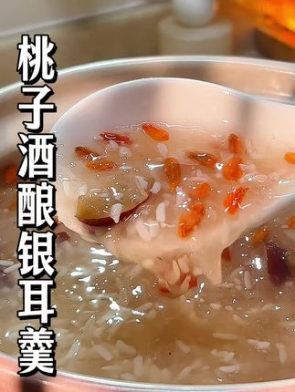
原视频 #067来源：1669 夏天的桃子很养人，暑气渐盛，口干易燥，这碗桃子银耳羹记得煮给自己和家人喝，香甜顺滑，暖心又暖胃#夏季热饮#三伏天#食疗小妙招#桃子银耳羹#有机本草银耳
打开原视频核对 ↗食材：桃子、银耳、红枣3颗、冰糖适量、清水800毫升、枸杞少许、醪糟2勺。
做法：桃子切小，加银耳、红枣、冰糖和水，水开转小火煮10分钟；加枸杞和醪糟。语音中的“80克银耳”与常用版本差异很大，建议回看画面核对。
食材：南杏仁30克、生腰果50克、泡好的鹰嘴豆20克、清水600毫升。
做法：全部入破壁机，使用豆浆模式。语音中的“男性人”按语境校正为南杏仁。
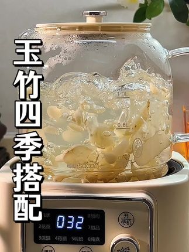
原视频 #069来源：392 玉竹是个宝，但不会搭配喝多也浪费，分享玉竹四季搭配，滋滋润润的全家都适合#夏日饮品 #玉竹#玉竹煮水搭配#喝出好气色#补津液
打开原视频核对 ↗春：玉竹8克、山药10克、莲子10克、玫瑰2朵。夏：玉竹8克、茯苓10克、桂圆5个、红枣3颗。秋：玉竹8克、百合10克、杏仁10克、麦冬6克。冬：玉竹8克、黄芪10克、党参20克、枸杞10克。
做法：每款加清水700毫升，煮30分钟。
①黄芪6片、麦冬5颗、桂圆3颗、红枣3颗，煮20分钟；②黄芪6片、铁棍山药5片、陈皮1块、水1升，煮20分钟；③黄芪6片、枸杞3克、玉竹5克、玫瑰2朵，先煮黄芪和玉竹，最后加枸杞、玫瑰闷泡几分钟。
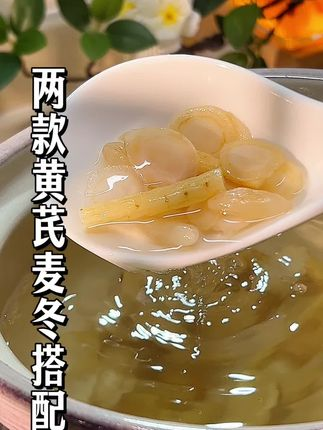
原视频 #072来源：234 夏天出汗多消耗大，总觉得疲惫口干，这两款家常黄芪麦冬水，温润回甘，日常喝很合适#喝出好气色#麦冬黄芪水#日常养生茶#三伏天饮品#食疗养生
打开原视频核对 ↗①黄芪10克、麦冬5克、百合8克、黑豆20克；②黄芪6克、麦冬10克、党参10克、西洋参5克。
做法：分别加清水1000毫升，煮开后转小火煮25分钟。
食材：绿心黑豆30克、黄芪10克、红枣3颗、枸杞10克、生姜2片、清水1000毫升。
做法：水开转小火煮20分钟。
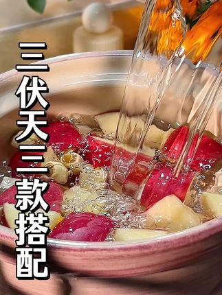
原视频 #075来源：401 7月15号就入伏了，分享三款三伏天热饮的经典搭配，清清爽爽一整年#喝出好气色#养生食疗 #三伏天#三伏天吃什么 #夏季热饮
打开原视频核对 ↗初伏：山药、莲子、茯苓、芡实各10克，苹果1个。中伏：黑豆、绿豆、赤小豆各10克，苹果1个。末伏：黄芪10克、麦冬8克、红枣3颗、枸杞5克、苹果1个。
做法：每款加清水1000毫升，大火煮开转小火煮25分钟。
食材：脆桃、醪糟2勺、枸杞几粒、清水少许。
做法：桃子切块放碗中，加醪糟、枸杞和少许水，上锅蒸30分钟。
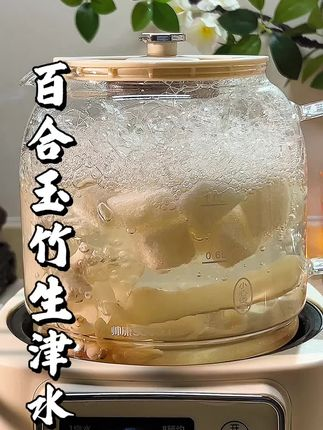
原视频 #077来源：450 夏天出汗多，易伤人体津液，别傻傻只知道喝水，来试试这碗百合玉竹生津饮，温和润养，清甜好喝#喝出好气色#养生茶#百合玉竹生津饮#食疗小妙招
打开原视频核对 ↗食材：百合10克、玉竹10克、茯苓10克、麦冬10克、雪梨半个、清水1000毫升。
做法：全部入壶煮30分钟。
食材：紫苏1小把、黑豆10克、糯薏米20克、生姜2片、红枣2颗、红糖适量、清水1000毫升。
做法：全部加水煮25分钟。
转写可辨内容：春含麦冬、黄芪、党参、玉竹；夏含麦冬9克、芡实9克、莲子；秋含麦冬、黄芪、茯苓；冬含麦冬10克、党参6克、当归。
注：原语音多处错字且部分克数无法可靠辨认，本卡仅作线索，精确配方请回看原视频画面。
食材：黑豆300克、当归2片、黄冰糖1块。
做法：黑豆洗净浸泡一夜，连水入锅，加当归和冰糖；大火煮开转小火熬干水分，继续翻炒至粘稠，晾凉后密封保存。
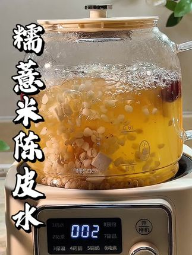
原视频 #083来源：1547 小暑到大暑，是一年中失热最重的15天，千万别贪凉！记得给家人煮薏米陈皮水，顺应时节， 舒舒服服过夏天！#喝出好气色 #糯薏米陈皮水#夏季饮品#小暑#糯薏米
打开原视频核对 ↗食材：炒糯薏米20克、茯苓10克、山药片10克、去核红枣3颗、陈皮1片。
做法：加足量清水煮30分钟。
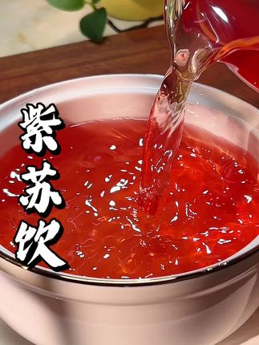
原视频 #084来源：294 三块钱的紫苏，就能在家复刻了风靡大宋的紫苏饮，空调 冰冻冷饮不离手的，这个可以安排上~#喝出好气色#紫苏饮#三伏天#夏季饮品#养生茶
打开原视频核对 ↗食材：紫苏、陈皮1块、甘草3片、冰糖少许、柠檬。
做法：紫苏用盐水浸10分钟并洗净，与陈皮、甘草加水大火煮开；加冰糖继续煮15分钟，自然放凉后挤入柠檬汁，茶汤变为粉红色。
食材：苹果1个、黄芪8克、麦冬10克、红枣5颗、清水1000毫升、枸杞适量。
做法：前五味大火煮开转小火煮25分钟，最后放枸杞。
来源：174 入伏前多给家人煮一壶甘草三豆饮，为伏前给身体打打基础，清润温和，很适合这个季节#喝出好气色#扁鹊三豆饮#夏日饮品#食养#三伏天
打开原视频核对 ↗食材：绿豆30克、黑豆30克、赤小豆30克、甘草2—3片。
做法：豆子洗净沥干，加甘草，花茶模式水开煮25分钟；豆子无需煮烂。
食材：鸡蛋5颗、花椒3克、肉桂6克、生姜6片、红糖1勺、清水适量。
做法：鸡蛋用盐水浸3分钟并洗净，与其余食材大火煮10分钟；敲碎蛋壳，再煮5分钟、焖5分钟。
①紫苏叶10片、炒薏米20克、茯苓8克；②紫苏叶10片、炒薏米20克、陈皮1片、小黄姜3片。
做法：分别加清水1000毫升，果茶模式煮20分钟。
食材：紫苏1小把、鸡蛋5颗、红枣5颗、陈皮1片、生姜3片、红糖1块。
做法：紫苏用盐水泡10分钟并洗净；除红糖外加水煮开，转小火煮8分钟；敲碎蛋壳，加红糖再煮3分钟。
来源：408 经常口干 喉咙干 喝水不解渴，来试试这碗苹果藕粉羹，温润清甜，喝完喉咙润润的，真的很舒服 #纯藕粉#食养#藕粉羹#喝出好气色#藕粉羹
打开原视频核对 ↗食材：苹果1个、莲子15克、百合10克、红枣3颗、清水1000毫升、纯藕粉2勺、枸杞少许。
做法：前五味煮开转小火煮20分钟；藕粉用凉水化开，倒入锅中快速搅匀，撒枸杞。
食材：小黄米200克、红枣100克、云南小黄姜100克。
做法：姜带皮切丝，与洗净的小米小火炒，表面水分炒干后加入红枣；炒至小米微黄、姜卷边、红枣有焦香。放凉密封，每次取2勺用开水冲泡。
来源：192 夏天燥热缠身，卧不安稳，饮食宜清淡，给家人煮一碗清润的双豆西米露，好吃又养人#食疗养生#西米露的做法#双豆西米露#电饭锅绿豆西米露#白西米
打开原视频核对 ↗食材：绿豆100克、红豆100克、白西米1包、去心莲子30克、老冰糖1块、牛奶250毫升。
做法：豆子浸泡一夜，与西米、莲子、冰糖和滚烫开水入电饭锅，煮饭键30分钟，中途多次搅拌；最后加牛奶。
食材：红豆200克、银耳5克、白西米半包、黄冰糖1块、开水1200毫升、牛奶250毫升。
做法：红豆提前冷冻成块（画面所示），与银耳、西米、冰糖和开水入锅，扣盖慢熬40分钟，中途多次搅拌防粘底；最后倒入牛奶。
食材：去核荔枝7颗、糯薏米30克、茯苓6克、去核红枣3颗、枸杞1小把、清水800毫升。
做法：全部入壶，果茶模式煮30分钟。
食材：桑葚10克、山楂8克、黄芪5克、陈皮5克、清水500毫升。
做法：加盖，水开煮20分钟。
来源：135 入夏后人更容易外热内寒，记得提前给身体打打基础，这碗姜香藕粉羹，口感绵密，喝完暖暖的很舒服！#藕粉羹#纯藕粉#立夏#食养#吃出健康
打开原视频核对 ↗食材：小黄姜、红糖、纯藕粉2勺、桂花少许。
做法：姜和红糖加水，水开煮4分钟；藕粉用凉水化开，捞出姜丝后倒入锅中，煮至浓稠透亮，撒桂花。
食材：核桃150克、红枣80克、黑芝麻200克、蜂蜜120克。
做法：红枣切碎、核桃搅碎；蜂蜜中小火熬至冒很多泡泡，关火趁热拌入食材；不烫手时搓丸，变硬可稍加热再搓。
来源：131 春季三款养生豆浆 春季养干正当时！干净脸也净，海叔私藏3款养干豆浆，熬夜黄皮姐妹快码住。#喝出好气色#破壁机食谱#食养#春季热饮#豆浆
打开原视频核对 ↗①绿豆30克、黄豆20克、去核红枣3颗、枸杞10克；②绿豆30克、小米20克、百合10克、莲子10克；③黑豆30克、黄豆20克、黑米10克、枸杞10克。
做法：每款加清水700毫升，破壁机豆浆模式。
来源：105 苹果玫瑰银耳羹 晨起口干口苦没精神？喝水不解渴可能是缺津液了，试试这碗全家都爱喝的润燥小甜羹 #喝出好气色#食养#润燥#苹果银耳羹#有机银耳
打开原视频核对 ↗食材：苹果、银耳、红枣、清水、玫瑰花1把。
做法：苹果、银耳、红枣加足量水，大火烧开转小火煮20分钟，最后加玫瑰花。具体用量原视频未说明。
食材：姜丝、八角、香菇、鹿茸菇、黄花菜、黑木耳、虫草花、白玉菇、腐竹、泡菌菇原汤、素蚝油、盐、松茸鲜、水淀粉。
做法：油热放姜丝、八角和菌菇腐竹，倒入原汤，中大火焖煮15分钟；加素蚝油、盐、松茸鲜，少许水淀粉勾芡。干货需提前泡发并彻底煮熟。
食材：绿豆、糯薏米（1∶1）、去核红枣3颗、枸杞少许。
做法：绿豆和薏米中小火炒至微黄，密封保存；每次取1把，加红枣和水煮30分钟，最后放枸杞。
来源：69 糯薏米瘦肉粥 春季雨水多潮湿，总觉得身子沉没精神，黏糊糊的，早上来一碗糯薏米瘦肉粥，软糯鲜香，热乎乎的，喝完很舒服！#喝出好气色#食养#宁化糯薏米#糯薏米瘦肉粥#早餐
打开原视频核对 ↗食材：肉片、生抽、淀粉、姜丝、食用油、糯薏米、大米、山药片、胡萝卜丁、芹菜、盐。
做法：肉片用生抽、淀粉、姜丝、油腌10分钟；薏米炒至微黄，与大米和水入砂锅，水开转小火煮15分钟；加山药煮20分钟，再加肉片、胡萝卜煮5分钟，最后放芹菜和盐。
来源：109 马蹄藕粉羹 经常口干嗓子干，内热上🔥 喝水也缓解不了，来试试这碗马蹄藕粉羹，清润甘香，暖身又润燥！#食养#养生#纯藕粉#马蹄藕粉羹#喝出好气色
打开原视频核对 ↗食材：马蹄丁10颗、红枣3颗、清水1000毫升、纯藕粉2勺、枸杞少许。
做法：马蹄、红枣加水煮开，转小火煮10分钟；倒入凉水化开的藕粉，快速搅匀，撒枸杞。
食材：鸡蛋2个、纯藕粉2勺、枸杞少许。
做法：鸡蛋打散，藕粉用凉水化开；水开倒入藕粉快速搅匀，再倒蛋液搅匀并煮熟，出锅前放枸杞。
食材：莲藕、姜片、糯薏米50克、红皮花生50克、开水1000毫升、山药100克、莲子30克、盐。
做法：莲藕切块拍碎，与姜片略炒；加薏米、花生和开水，中小火煮25分钟；加山药、莲子再煮20分钟，出锅前加盐。
食材：口蘑、山药、生腰果、清水400毫升、盐少许、芹菜粒和黑胡椒少许。
做法：口蘑油煎并保留汁水，与山药、腰果、水和盐入破壁机，米糊模式30分钟；用口蘑片、芹菜粒和黑胡椒点缀。
食材：山药、糯薏米、莲子30克、红枣8颗、桂圆8颗、枸杞少许。
做法：薏米炒至微黄，与莲子、红枣和足量水先煮20分钟；加山药片、桂圆，小火再煮20分钟，出锅前放枸杞。
来源：77 春天主要多排多疏！这碗糯薏米排骨汤我每周煮3次给家人喝，汤鲜味美，软糯甘甜，一口下去热呼呼的暖心又暖胃，真的太舒服了！#喝出好气色 #食养 #糯薏米排骨汤#宁化糯薏米
打开原视频核对 ↗食材：铁棍山药、胡萝卜、糯薏米、焯水排骨、盐、白胡椒、枸杞。
做法：薏米炒至微黄，入锅加八分满清水，水开放排骨，小火煮30分钟；加山药、胡萝卜再煮20分钟，调味并放枸杞。
食材：苹果、燕麦、红枣碎、鸡蛋1个、纯牛奶。
做法：苹果、燕麦、红枣一起煮5分钟，加入鸡蛋并充分煮熟，关火后加牛奶。用量原视频未说明。
来源：52 早上口干口苦、喝水不管用？这可能不是缺水是缺津液了，这碗雪梨润燥羹喝对了超舒服。#美谷季有机银耳#银耳羹#西米#喝出好气色#食养
打开原视频核对 ↗食材：雪梨1个、免泡银耳5克、西米半包、黄冰糖适量、枸杞1小把。
做法：银耳、西米加足量开水，小火煮20分钟，多搅拌；西米剩一点白心时加入梨丝、冰糖、枸杞，再煮5分钟。
食材：鲜虾仁、生抽、淀粉、姜丝、糯薏米、大米20克、山药片、胡萝卜、芹菜丁、盐。
做法：虾仁用生抽、淀粉、姜丝腌制；薏米炒至微黄，与大米和水煮开，转小火20分钟；加山药煮10分钟，再加虾和胡萝卜焖煮3分钟，最后放芹菜和盐。
食材：糯薏米80克、绿豆80克、水1800毫升、焯水排骨、姜2片、红枣3颗、带皮冬瓜半块、盐、白胡椒。
做法：薏米、绿豆洗净炒至微黄，加水煮开，放排骨、姜、红枣，小火30分钟；加冬瓜块再煲20分钟，调味。
来源：113 这是学霸很喜欢喝的豆浆，孩子学习压力大用脑多，妈妈们可以多做给孩子喝一喝，香醇顺滑，营养丰富，老人孩子都喜欢#破壁机食谱 #健脾养胃 #营养豆浆#儿童米糊
打开原视频核对 ↗食材：铁棍山药60克、花生20克、核桃3克、小米30克、红枣3颗、清水700毫升。
做法：全部入破壁机，使用豆浆模式。
 144254 麦冬四季黄金搭配 麦冬是个宝，但搭配错了等白喝，分享麦冬一年四季的黄金搭配，每个季节都可以喝#喝出好气色#春季热饮#食养#麦冬四季搭配#自制热饮
145105 苹果玫瑰银耳羹 晨起口干口苦没精神？喝水不解渴可能是缺津液了，试试这碗全家都爱喝的润燥小甜羹 #喝出好气色#食养#润燥#苹果银耳羹#有机银耳
14698 什锦素菌菜煲 鲜掉眉毛的什锦菌菇煲！蛋白质远超牛肉，素食也能吃得有滋有味#素食#素菜#什锦素菜煲#斋食
144254 麦冬四季黄金搭配 麦冬是个宝，但搭配错了等白喝，分享麦冬一年四季的黄金搭配，每个季节都可以喝#喝出好气色#春季热饮#食养#麦冬四季搭配#自制热饮
145105 苹果玫瑰银耳羹 晨起口干口苦没精神？喝水不解渴可能是缺津液了，试试这碗全家都爱喝的润燥小甜羹 #喝出好气色#食养#润燥#苹果银耳羹#有机银耳
14698 什锦素菌菜煲 鲜掉眉毛的什锦菌菇煲！蛋白质远超牛肉，素食也能吃得有滋有味#素食#素菜#什锦素菜煲#斋食
 147475 雪梨百合银耳羹 经常口干 眼干 嗓子干，内热上🔥喝水也缓解不了，来试试这碗雪梨小甜羹！#喝出好气色#养生#食养#银耳#雪梨百合银耳羹
148111 糯薏米绿豆水 超适合春天喝的干净水，咱平时可以多喝一喝，好处多！#喝出好气色#食养#养生#薏米绿豆水#春季热饮
14969 糯薏米瘦肉粥 春季雨水多潮湿，总觉得身子沉没精神，黏糊糊的，早上来一碗糯薏米瘦肉粥，软糯鲜香，热乎乎的，喝完很舒服！#喝出好气色#食养#宁化糯薏米#糯薏米瘦肉粥#早餐
150100 黑豆藕粉羹 口干 口苦 内热上🔥总口渴？来试试这碗黑豆藕粉润燥羹，一口下去，从喉咙润到胃里，真的太舒服了！ #黑豆藕粉羹#纯藕粉#食养#养生#润燥
151481 苹果藕粉羹 春阳升燥气起，口干 眼干 嗓子干，喝水不解渴，这时一定要好好补津液，这碗苹果藕粉羮，清甜又滋润，暖心又暖胃#纯藕粉#补津液#喝出好气色#藕粉羮#食养
1521022 雪梨百合银耳羹 不管大人还是小孩每个季节都要好好润养，这碗家常甜羹，温润滋养很好喝！#喝出好气色食养#雪梨百合银耳羹#美谷季有机银耳#养生
153257 黄芪水四季黄金搭配，每天一杯，暖身养气气色好#美食#食养#养生#黄芪水#四季黄芪水搭配
154161 山药银耳羹 口干舌燥，内热上🔥，来试试这碗家常甜羹，温润顺滑，超好喝！#食养#山药银耳羹#养生#春季热饮
155109 马蹄藕粉羹 经常口干嗓子干，内热上🔥 喝水也缓解不了，来试试这碗马蹄藕粉羹，清润甘香，暖身又润燥！#食养#养生#纯藕粉#马蹄藕粉羹#喝出好气色
156169 口干 喉咙干 喝水不解渴？来试试这碗鸡蛋藕粉羹，一口下去，从喉咙润到胃里，真的太舒服了！ #鸡蛋藕粉羹#纯藕粉#食养#养生
157118 春季雨水多，又潮湿，这碗糯薏米莲藕素汤记得给家人安排起来！#喝出好气色 #食养#养生#糯薏米莲藕素汤。
1583.0万 春燥口干，这款全家都能喝的养生茶，清爽舒服#喝出好气色#食养#自制饮品#黑豆水#春季暖饮
15969 口干 喉咙干 ，喝水不解渴，快来试试这碗南瓜银耳润燥羹，一口下去，从喉咙润到胃里，真的太舒服了！ #南瓜银耳羹#有机银耳#食养#养生#春季热饮
16049 口干 喉咙干 ，总口渴？来试试这碗苹果藕粉润燥羹，一口下去，从喉咙润到胃里，真的太舒服了！ #苹果藕粉羹#纯藕粉#食养#养生
16189 只要简单三种食材，就能做出纯素法式蘑菇浓汤，味道一点不输给西餐厅，做法简单易学！#蘑菇浓汤#法式浓汤#素汤#素食
16251 经常口干嗓子干，内热上火，喝水也缓解不了，快来试试这碗雪梨藕粉羹，清润甘香，暖身又润燥！#食养#养生#纯藕粉#雪梨藕粉羹#喝出好气色
16351 口干 喉咙干 ，内热上🔥总口渴？来试试这碗黑豆藕粉润燥羹，一口下去，从喉咙润到胃里，真的太舒服了！ #黑豆藕粉羹#纯藕粉#食养#养生
164238 麦冬春季两款黄金搭配，每天一杯，由内而外润起来。#喝出好气色 #麦冬#食养#养生#麦冬四季搭
16584 口干 喉咙干 ，内热上🔥 总口渴，来试试这碗黑豆藕粉润燥羹，一口下去，从喉咙润到胃里，真的太舒服了！ #黑豆藕粉羹#纯藕粉#食养#养生
16651 口干舌燥，内热上🔥，试试这碗家常甜羹，温润顺滑，超好喝！#食养#百合莲子银耳羹#养生#春季热饮
16747 不管大人还是小孩每个季节都要好好润养，这碗家常甜羹，温润滋养很好喝！#喝出好气色#食养#马蹄雪梨银耳羹#美谷季有机银耳#养生
168503 春天主要多排多疏！这碗糯薏米瘦肉粥我每周都会煮给家人喝，鲜香味美，软糯甘甜，一口下去热呼呼的暖心又暖胃！#喝出好气色 #食养 #糯薏米瘦肉粥#宁化糯薏米
16948 98岁奶奶的养生粥，软糯甘甜，四季温润，全家都爱喝#食养#养生粥#糯薏米粥#三白粥
17063 口干 喉咙干 ，内热上🔥总口渴？来试试这碗山药银耳润燥羹，一口下去，从喉咙润到胃里，真的太舒服了！ #山药银耳羹#美谷季有机银耳#食养#喝出好气色
17138 口干 喉咙干 ，内热上🔥总口渴？来试试海叔经常煮给家人喝的雪梨百合银耳羹，一口下去，从喉咙润到胃里 #雪梨百合银耳羹#养生#食养#喝出好气色
172195 女儿出门总被邻居夸，多亏我一直坚持给她喝这碗热饮，今天海叔把自用配方分享给大家！记得收藏好！#喝出好气色#食养#七白饮#养生#破壁机食谱
173154 分享我每晚睡够10小时的小秘诀，睡前喝一杯，润润的真的很舒服。#喝出好气色#养生茶#食养#莲子百合
1742094 麦冬是个宝，一年四季少不了，分享麦冬四季的黄金搭配，滋滋润润很养人。#喝出好气色 #麦冬#食养#养生#麦冬四季搭配
17573 早上起来口干口苦，内热上🔥，这碗马蹄藕粉羹别错过，温润甘甜，暖心又暖胃 #喝出好气色 #养生 #纯藕粉 #马蹄藕粉羹#食养
17680 早上起来口干口苦，内热上🔥，我都会煮一碗黑豆润燥羹来喝，温润甘甜，喝完从嘴巴润到胃里，真的太舒服了！#食养#黑豆藕粉羹#纯藕粉#养生#喝出好气色
17735 天气干燥，不管大人还是小孩都要好好润养，这碗家常甜羹，温润滋养很好喝#喝出好气色#食养#雪梨银耳羹#美谷季有机银耳
17877 春天主要多排多疏！这碗糯薏米排骨汤我每周煮3次给家人喝，汤鲜味美，软糯甘甜，一口下去热呼呼的暖心又暖胃，真的太舒服了！#喝出好气色 #食养 #糯薏米排骨汤#宁化糯薏米
17949 春天主要多排多疏！这碗糯薏米瘦肉粥我家每周煮3次，软糯鲜香，热呼呼的暖心又暖胃，真的太舒服了！#喝出好气色 #食养 #早餐 #糯薏米瘦肉粥 #宁化糯薏米
180113 10分钟搞定的营养早餐，软糯清甜，奶香十足，好喝健康没负担！#苹果燕麦粥#好麦多燕麦#营养早餐#食养#低脂低卡
181289 这三种食材一起炒一炒，没想到这么好喝！尤其是过年容易吃多吃杂，早上来一杯，真的太舒服了！#喝出好气色#焦二仙茶#食养#养生#自制饮品
1821526 春天主要多排多疏！这碗糯薏米瘦肉粥我家每周煮3次，软糯鲜香，健康又养人！#喝出好气色 #食养 #早餐 #糯薏米瘦肉粥 #宁化糯薏米
18352 早上口干口苦、喝水不管用？这可能不是缺水是缺津液了，这碗雪梨润燥羹喝对了超舒服。#美谷季有机银耳#银耳羹#西米#喝出好气色#食养
18446 玫瑰的淡雅清香，搭配上苹果和银耳的水润，一碗下肚，暖乎乎的好喝又舒服，姐妹们也去试试吧！#食养 #喝出好气色#养生美食 #苹果银耳羹羹#美谷季有机银耳
18533 春季雨水多，潮湿又闷，海叔就会经常煮这个糯薏米粥给家人喝，舒舒服服过春夏。#养生#食养#糯薏米虾仁粥#宁化糯薏米
18658 口干 喉咙干 ，内热上🔥总口渴？来试试海叔经常煮给家人喝的雪梨百合银耳羹，一口下去，从喉咙润到胃里 #山药银耳羹#美谷季有机银耳#食养#喝出好气色
18768 口干 喉咙干 ，内热上🔥总口渴？来试试海叔经常煮给家人喝的山药银耳羹，一口下去，从喉咙润到胃里 #山药银耳羹#美谷季有机银耳#食养#喝出好气色
18887 立春后阳气渐渐生发，也是孩子长身体的黄金期，海叔就会隔三差五煮这个汤给孩子喝，温温润润的很舒服！#喝出好气色#食养#苹果四神汤#养生热饮
18975 天气干燥，不管大人还是小孩都要好好润养，这碗家常甜羹，温润滋养很好喝#喝出好气色#食养#雪梨银耳羹#美谷季有机银耳
19064 立春后黄金养生期！每天一碗“胶质汤”，从嗓子眼润到胃里。#喝出好气色#食养#南瓜银耳羹#美谷季有机银耳#食疗养生
191794 我们家一年四季💦气不重的秘密，全靠这碗冬瓜薏米排骨汤！喝完整个人都舒服#冬瓜薏米汤#糯薏米#喝出好气色#食养
192122 内热上火总口渴？这碗润到骨子里的甜羹，喝一次舒服一整天。#雪梨银耳羹#美谷季有机银耳#食养#喝出好气色
193292 春天讲究温润调养，我每周都会给家人煮上一锅糯薏米瘦肉粥，清淡养人，舒舒服服迎春夏。#食养#养生早餐#糯薏米瘦肉粥#宁化糯薏米
194827 我隔三岔五就会给家人煮黑豆藕粉羹喝，喝完润润的很舒服，过年大鱼大肉吃多了，你也煮给家人喝一喝吧！#食养#喝出好气色#健康饮食#黑豆藕粉羹#纯藕粉
195113 这是学霸很喜欢喝的豆浆，孩子学习压力大用脑多，妈妈们可以多做给孩子喝一喝，香醇顺滑，营养丰富，老人孩子都喜欢#破壁机食谱 #健脾养胃 #营养豆浆#儿童米糊
196126 天气干燥，不管大人还是小孩都要好好润养，这碗家常甜羹，温润滋养很好喝#喝出好气色#食养#喝出健康#美谷季有机银耳
1978720 原来学医的人是这么吃黑芝麻的，这样做不但好吃，还营养健康#黑芝麻丸#自制黑芝麻#食养#传统美食
19868 晨起口干口苦，外干内热，喝多少水都不解渴，我就给自己和家人做这碗藕粉鸡蛋羹喝，滋滋润润的，喝完会身都舒服#喝出好气色#食养#藕粉鸡蛋羹#纯藕粉
199108 苹果和银耳的搭配，好喝到超乎你的想象，银耳的滋润加苹果的清甜，喝完全身都暖暖的很舒服！#喝出好气色#食养#健康饮食#银耳#破壁机食谱
200142 冬天是养脾胃的好时期，这个苹果山药米糊可以多做给家人喝一喝，特别是春节期间，大鱼大肉吃多了，早上来一碗，暖乎乎的很舒服！#喝出好气色#苹果山药米糊#山药#健脾养胃# 秋冬热饮
147475 雪梨百合银耳羹 经常口干 眼干 嗓子干，内热上🔥喝水也缓解不了，来试试这碗雪梨小甜羹！#喝出好气色#养生#食养#银耳#雪梨百合银耳羹
148111 糯薏米绿豆水 超适合春天喝的干净水，咱平时可以多喝一喝，好处多！#喝出好气色#食养#养生#薏米绿豆水#春季热饮
14969 糯薏米瘦肉粥 春季雨水多潮湿，总觉得身子沉没精神，黏糊糊的，早上来一碗糯薏米瘦肉粥，软糯鲜香，热乎乎的，喝完很舒服！#喝出好气色#食养#宁化糯薏米#糯薏米瘦肉粥#早餐
150100 黑豆藕粉羹 口干 口苦 内热上🔥总口渴？来试试这碗黑豆藕粉润燥羹，一口下去，从喉咙润到胃里，真的太舒服了！ #黑豆藕粉羹#纯藕粉#食养#养生#润燥
151481 苹果藕粉羹 春阳升燥气起，口干 眼干 嗓子干，喝水不解渴，这时一定要好好补津液，这碗苹果藕粉羮，清甜又滋润，暖心又暖胃#纯藕粉#补津液#喝出好气色#藕粉羮#食养
1521022 雪梨百合银耳羹 不管大人还是小孩每个季节都要好好润养，这碗家常甜羹，温润滋养很好喝！#喝出好气色食养#雪梨百合银耳羹#美谷季有机银耳#养生
153257 黄芪水四季黄金搭配，每天一杯，暖身养气气色好#美食#食养#养生#黄芪水#四季黄芪水搭配
154161 山药银耳羹 口干舌燥，内热上🔥，来试试这碗家常甜羹，温润顺滑，超好喝！#食养#山药银耳羹#养生#春季热饮
155109 马蹄藕粉羹 经常口干嗓子干，内热上🔥 喝水也缓解不了，来试试这碗马蹄藕粉羹，清润甘香，暖身又润燥！#食养#养生#纯藕粉#马蹄藕粉羹#喝出好气色
156169 口干 喉咙干 喝水不解渴？来试试这碗鸡蛋藕粉羹，一口下去，从喉咙润到胃里，真的太舒服了！ #鸡蛋藕粉羹#纯藕粉#食养#养生
157118 春季雨水多，又潮湿，这碗糯薏米莲藕素汤记得给家人安排起来！#喝出好气色 #食养#养生#糯薏米莲藕素汤。
1583.0万 春燥口干，这款全家都能喝的养生茶，清爽舒服#喝出好气色#食养#自制饮品#黑豆水#春季暖饮
15969 口干 喉咙干 ，喝水不解渴，快来试试这碗南瓜银耳润燥羹，一口下去，从喉咙润到胃里，真的太舒服了！ #南瓜银耳羹#有机银耳#食养#养生#春季热饮
16049 口干 喉咙干 ，总口渴？来试试这碗苹果藕粉润燥羹，一口下去，从喉咙润到胃里，真的太舒服了！ #苹果藕粉羹#纯藕粉#食养#养生
16189 只要简单三种食材，就能做出纯素法式蘑菇浓汤，味道一点不输给西餐厅，做法简单易学！#蘑菇浓汤#法式浓汤#素汤#素食
16251 经常口干嗓子干，内热上火，喝水也缓解不了，快来试试这碗雪梨藕粉羹，清润甘香，暖身又润燥！#食养#养生#纯藕粉#雪梨藕粉羹#喝出好气色
16351 口干 喉咙干 ，内热上🔥总口渴？来试试这碗黑豆藕粉润燥羹，一口下去，从喉咙润到胃里，真的太舒服了！ #黑豆藕粉羹#纯藕粉#食养#养生
164238 麦冬春季两款黄金搭配，每天一杯，由内而外润起来。#喝出好气色 #麦冬#食养#养生#麦冬四季搭
16584 口干 喉咙干 ，内热上🔥 总口渴，来试试这碗黑豆藕粉润燥羹，一口下去，从喉咙润到胃里，真的太舒服了！ #黑豆藕粉羹#纯藕粉#食养#养生
16651 口干舌燥，内热上🔥，试试这碗家常甜羹，温润顺滑，超好喝！#食养#百合莲子银耳羹#养生#春季热饮
16747 不管大人还是小孩每个季节都要好好润养，这碗家常甜羹，温润滋养很好喝！#喝出好气色#食养#马蹄雪梨银耳羹#美谷季有机银耳#养生
168503 春天主要多排多疏！这碗糯薏米瘦肉粥我每周都会煮给家人喝，鲜香味美，软糯甘甜，一口下去热呼呼的暖心又暖胃！#喝出好气色 #食养 #糯薏米瘦肉粥#宁化糯薏米
16948 98岁奶奶的养生粥，软糯甘甜，四季温润，全家都爱喝#食养#养生粥#糯薏米粥#三白粥
17063 口干 喉咙干 ，内热上🔥总口渴？来试试这碗山药银耳润燥羹，一口下去，从喉咙润到胃里，真的太舒服了！ #山药银耳羹#美谷季有机银耳#食养#喝出好气色
17138 口干 喉咙干 ，内热上🔥总口渴？来试试海叔经常煮给家人喝的雪梨百合银耳羹，一口下去，从喉咙润到胃里 #雪梨百合银耳羹#养生#食养#喝出好气色
172195 女儿出门总被邻居夸，多亏我一直坚持给她喝这碗热饮，今天海叔把自用配方分享给大家！记得收藏好！#喝出好气色#食养#七白饮#养生#破壁机食谱
173154 分享我每晚睡够10小时的小秘诀，睡前喝一杯，润润的真的很舒服。#喝出好气色#养生茶#食养#莲子百合
1742094 麦冬是个宝，一年四季少不了，分享麦冬四季的黄金搭配，滋滋润润很养人。#喝出好气色 #麦冬#食养#养生#麦冬四季搭配
17573 早上起来口干口苦，内热上🔥，这碗马蹄藕粉羹别错过，温润甘甜，暖心又暖胃 #喝出好气色 #养生 #纯藕粉 #马蹄藕粉羹#食养
17680 早上起来口干口苦，内热上🔥，我都会煮一碗黑豆润燥羹来喝，温润甘甜，喝完从嘴巴润到胃里，真的太舒服了！#食养#黑豆藕粉羹#纯藕粉#养生#喝出好气色
17735 天气干燥，不管大人还是小孩都要好好润养，这碗家常甜羹，温润滋养很好喝#喝出好气色#食养#雪梨银耳羹#美谷季有机银耳
17877 春天主要多排多疏！这碗糯薏米排骨汤我每周煮3次给家人喝，汤鲜味美，软糯甘甜，一口下去热呼呼的暖心又暖胃，真的太舒服了！#喝出好气色 #食养 #糯薏米排骨汤#宁化糯薏米
17949 春天主要多排多疏！这碗糯薏米瘦肉粥我家每周煮3次，软糯鲜香，热呼呼的暖心又暖胃，真的太舒服了！#喝出好气色 #食养 #早餐 #糯薏米瘦肉粥 #宁化糯薏米
180113 10分钟搞定的营养早餐，软糯清甜，奶香十足，好喝健康没负担！#苹果燕麦粥#好麦多燕麦#营养早餐#食养#低脂低卡
181289 这三种食材一起炒一炒，没想到这么好喝！尤其是过年容易吃多吃杂，早上来一杯，真的太舒服了！#喝出好气色#焦二仙茶#食养#养生#自制饮品
1821526 春天主要多排多疏！这碗糯薏米瘦肉粥我家每周煮3次，软糯鲜香，健康又养人！#喝出好气色 #食养 #早餐 #糯薏米瘦肉粥 #宁化糯薏米
18352 早上口干口苦、喝水不管用？这可能不是缺水是缺津液了，这碗雪梨润燥羹喝对了超舒服。#美谷季有机银耳#银耳羹#西米#喝出好气色#食养
18446 玫瑰的淡雅清香，搭配上苹果和银耳的水润，一碗下肚，暖乎乎的好喝又舒服，姐妹们也去试试吧！#食养 #喝出好气色#养生美食 #苹果银耳羹羹#美谷季有机银耳
18533 春季雨水多，潮湿又闷，海叔就会经常煮这个糯薏米粥给家人喝，舒舒服服过春夏。#养生#食养#糯薏米虾仁粥#宁化糯薏米
18658 口干 喉咙干 ，内热上🔥总口渴？来试试海叔经常煮给家人喝的雪梨百合银耳羹，一口下去，从喉咙润到胃里 #山药银耳羹#美谷季有机银耳#食养#喝出好气色
18768 口干 喉咙干 ，内热上🔥总口渴？来试试海叔经常煮给家人喝的山药银耳羹，一口下去，从喉咙润到胃里 #山药银耳羹#美谷季有机银耳#食养#喝出好气色
18887 立春后阳气渐渐生发，也是孩子长身体的黄金期，海叔就会隔三差五煮这个汤给孩子喝，温温润润的很舒服！#喝出好气色#食养#苹果四神汤#养生热饮
18975 天气干燥，不管大人还是小孩都要好好润养，这碗家常甜羹，温润滋养很好喝#喝出好气色#食养#雪梨银耳羹#美谷季有机银耳
19064 立春后黄金养生期！每天一碗“胶质汤”，从嗓子眼润到胃里。#喝出好气色#食养#南瓜银耳羹#美谷季有机银耳#食疗养生
191794 我们家一年四季💦气不重的秘密，全靠这碗冬瓜薏米排骨汤！喝完整个人都舒服#冬瓜薏米汤#糯薏米#喝出好气色#食养
192122 内热上火总口渴？这碗润到骨子里的甜羹，喝一次舒服一整天。#雪梨银耳羹#美谷季有机银耳#食养#喝出好气色
193292 春天讲究温润调养，我每周都会给家人煮上一锅糯薏米瘦肉粥，清淡养人，舒舒服服迎春夏。#食养#养生早餐#糯薏米瘦肉粥#宁化糯薏米
194827 我隔三岔五就会给家人煮黑豆藕粉羹喝，喝完润润的很舒服，过年大鱼大肉吃多了，你也煮给家人喝一喝吧！#食养#喝出好气色#健康饮食#黑豆藕粉羹#纯藕粉
195113 这是学霸很喜欢喝的豆浆，孩子学习压力大用脑多，妈妈们可以多做给孩子喝一喝，香醇顺滑，营养丰富，老人孩子都喜欢#破壁机食谱 #健脾养胃 #营养豆浆#儿童米糊
196126 天气干燥，不管大人还是小孩都要好好润养，这碗家常甜羹，温润滋养很好喝#喝出好气色#食养#喝出健康#美谷季有机银耳
1978720 原来学医的人是这么吃黑芝麻的，这样做不但好吃，还营养健康#黑芝麻丸#自制黑芝麻#食养#传统美食
19868 晨起口干口苦，外干内热，喝多少水都不解渴，我就给自己和家人做这碗藕粉鸡蛋羹喝，滋滋润润的，喝完会身都舒服#喝出好气色#食养#藕粉鸡蛋羹#纯藕粉
199108 苹果和银耳的搭配，好喝到超乎你的想象，银耳的滋润加苹果的清甜，喝完全身都暖暖的很舒服！#喝出好气色#食养#健康饮食#银耳#破壁机食谱
200142 冬天是养脾胃的好时期，这个苹果山药米糊可以多做给家人喝一喝，特别是春节期间，大鱼大肉吃多了，早上来一碗，暖乎乎的很舒服！#喝出好气色#苹果山药米糊#山药#健脾养胃# 秋冬热饮